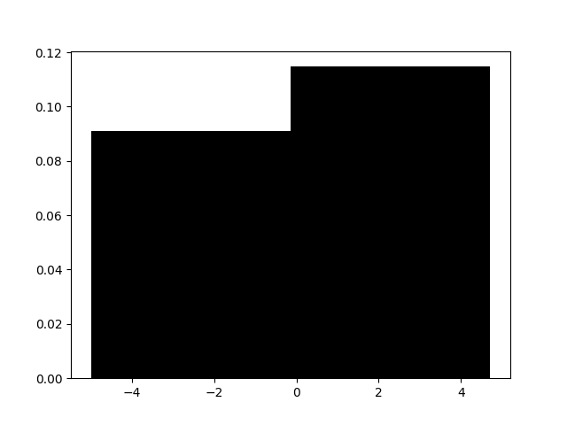
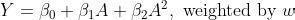
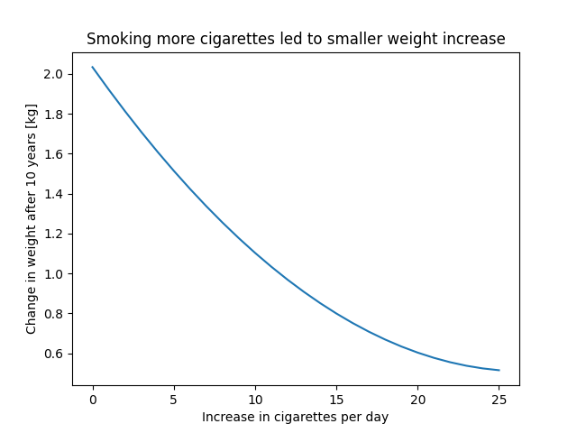
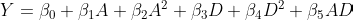
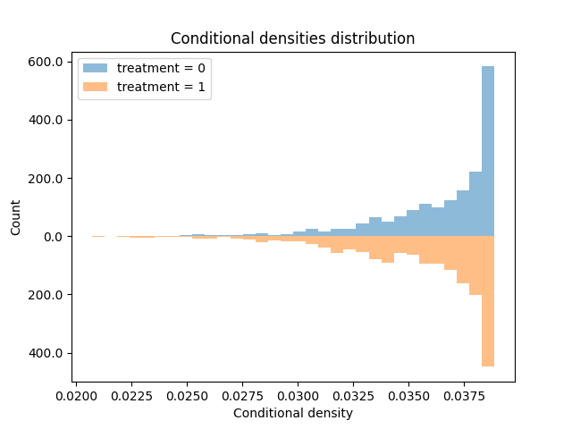
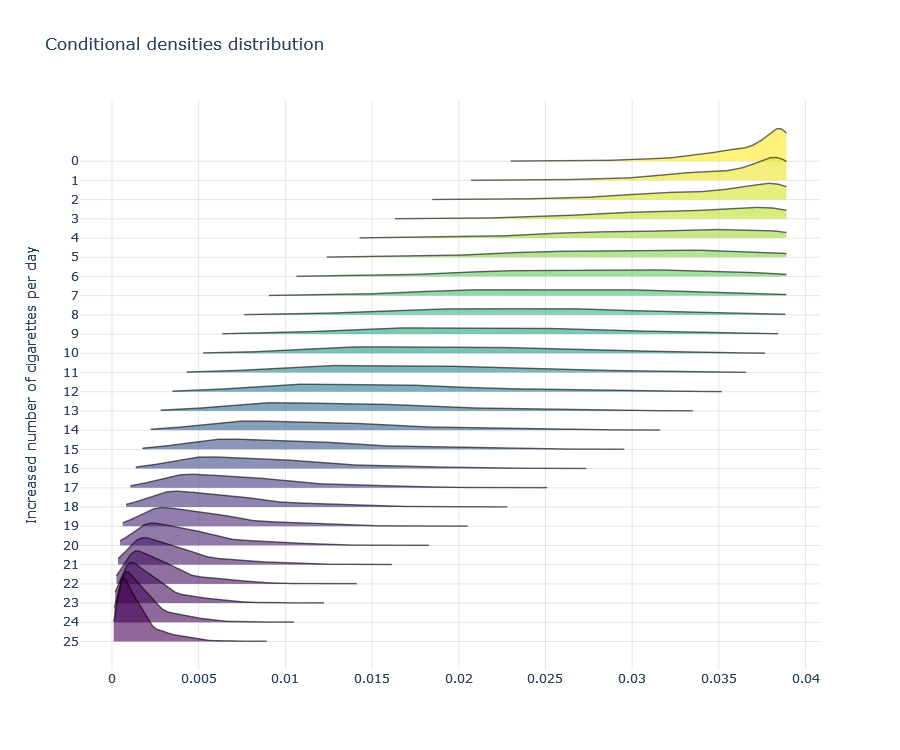

Causal Inference with Continuous Treatments
Generalizing inverse probability weights for non-categorical treatments.
Causal inference, the science of estimating causal effects from non-randomized observational data, is usually presented using binary treatment; we either treat or don’t treat; we give drug A or drug B. There’s a good reason for that, as causality is already complex as it is. However, not all interventions are binary (or discrete).
Sometimes, the interventions we care about are continuous. “Taking a drug”, for example, is fairly vague — drugs have active ingredients and those can come in different dosages. Too little and the drug might not seem effective, too much and the drug might be harmful. Therefore, we might be interested in the effect of different dosages of the same drug. This is often called dose-response modeling.
Continuous exposures are all around us. From drug dosages to number of daily cigarettes smoked or air pollution levels, from how much time you watched an ad before skipping it to how much red a the “unsubscribe” button is on a newsletter, from the interest rate increased by the central bank to the amount of money in a lottery winning. We can’t limit ourselves to studying binary exposures just because the introduction book didn’t cover the other ones.
In this post I will introduce a generalized version of inverse probability weighting for continuous treatment. I’ll show different estimation methods and discuss the required assumptions and its limitations. I will assume you are familiar with causal inference and IPW for binary treatment, but if you are not — I got you covered in this IPW explainer.
From binary to continuous treatment
Recall that in the binary treatment setting, a common way to estimate causal effects is by using inverse probability weighting (sometimes called inverse propensity weighting, but I’ll just use IPW). Given individual \(i\) with treatment assignment \(a_i\) and characteristics \(x_i\), its inverse propensity weight is defined as: \(w_i=1/\Pr[A=a_i|X=x_i]\). Namely, the inverse probability of \(i\) to be assigned to their treatment, given their characteristics.
However, when treatment (or any random variable for that matter) is continuous, the notion probability mass fails and we need to speak in terms of probability density. This is because the probability of a single point, say \(a_i\), is basically 0, while it may still have density associated with it since density is defined as the derivative of the cumulative probability function. This is a fundamental theoretical difference, but we can capture it in a small notation change, instead of \(\Pr \left[A=a_i|X=x_i \right]\) we will use \(f \left(a_i|x_i \right)\).

Modelling
Recall that estimating the treatment effect with IPW is comprised of two main steps. First, model the treatment and obtain IP-weights. Second, model the outcome using those weights. In the binary case, once we have the weights, the simplest way to estimate the potential outcomes is to simply take the weighted average in the treated and untreated (often called the Horvitz-Thompson estimator). However, an equivalent way is to use a simple univariable regression: regress the outcome against the treatment (and an intercept) weighted by the IP-weights. Then, the average treatment effect is simply defined by the coefficient corresponding to the treatment variable. This is often called a marginal structural model in the epidemiology literature.
Note that in the continuous treatment case, the first option is not applicable. Often, there will be many unique treatment values and it will be rare to have enough samples with the exact same continuous treatment value, for all treatment values. Binning them will solve it, but we’re here for continuous treatment modeling. Therefore, we will need to use the latter option and create an additional (parametric) model between the outcome and the treatment. This will be our dose-response function.
Let’s examine those two steps in more details.
Step 1: modeling the treatment
With categorical treatments, we needed to model the probability of getting treated. We could have done that by regressing the treatment assignment against the covariates, basically using any “classifier” that outputs predictions in the 0–1 interval which we can then interpret as probabilities. Logistic regression, for example is a generalized linear model that is defined by the binomial distribution — a discrete probability function. With continuous treatment, however, we will need a regression model instead. For example, in generalized linear models, a linear regression model is defined by the Gaussian distribution. And as the animation shows above — the more categories a binomial distribution has the better it is approximated by a normal distribution.
Once we fitted a model, we can obtain the conditional expectation \(E \left[A|X \right]\). But unlike the binomial case, in the continuous case, this is not sufficient to generate densities. For simplicity, let’s assume the common Gaussian distribution, which is parameterized by a mean and variance. The conditional mean of that distribution will be the estimated conditional expectations (the predictions); the variance will be constant and will be set to be the variance of the residuals between the treatment and the predictions. Once we defined the distribution, we take the density of the observed treatment values with respect to this distribution. The generalized IP-weights are the inverse of these densities.
To summarize step 1:
Fit a function \(g(x)\), regressing the treatment \(A\) on covariates \(X\).
\(A=g(X)+\epsilon=\alpha_0+\alpha_1 X+\epsilon\)Define the conditional distribution \(D_i \sim \text{Normal}(g(x_i), \text{Var} \left(a_i-g(x_i) \right)\).
- The conditional mean of each sample is its prediction.
- The variance is fixed and is the variance of the prediction residuals.
Define the density \(d_i\) as the value of \(a_i\) from \(D_i\).
Define the weight \(w_i\) to be the inverse of the density: \(1/d_i\) .
Step 2: modeling the outcome
Once we obtained the balancing weights w, we can model the counterfactual outcomes using the observed outcomes and treatments. To do that, we regress the outcome against the treatment, weighted by the IP-weights obtained from step 1. However, unlike the binary treatment case, the functional form of the continuous treatment should be flexible enough to avoid bias due to misspecification. For example, we will add a quadratic term of the treatment or model it using a spline, etc.
When we have non-linear transformations of the main treatment variable, we can no longer interpret the treatment effect as the coefficient of the treatment covariate. Instead, to make counterfactual outcome predictions, we will set some treatment value and run it through our model to get the predicted outcome, and average it out across the units to obtain the average outcome had everyone been assigned that specific treatment value.
We can repeat that for two different treatment values. Then the causal effect will be the difference (or ratio) between these two potential outcome predictions. Alternatively, we can repeat that for every treatment value in a range we care about and obtain a dose-response curve — see how the counterfactual outcome prediction changes as a function of assigning different dosages.

Code
Below is a Python code demonstrating the estimation process described above.
import pandas as pd
import statsmodels.api as sm
from scipy import stats
from causallib.datasets import load_nhefs
def conditional_densities(data, use_confounders=True):
formula = "smkintensity82_71 ~ 1"
if use_confounders:
formula += """ +
C(sex) + C(race) + age + I(age**2) +
smokeintensity + I(smokeintensity**2) +
smokeyrs + I(smokeyrs**2) +
C(exercise) + C(active) + C(education) +
wt71 + I(wt71**2)
"""
model = sm.formula.ols(formula, data=data).fit()
density = stats.norm(
loc=model.fittedvalues,
scale=model.resid.std(),
)
densities = density.pdf(data["smkintensity82_71"])
densities = pd.Series(densities, index=model.fittedvalues.index)
return densities
data = load_nhefs(raw=True)[0]
data = data.loc[data["smokeintensity"] <= 25] # Above 25 intensity is sparser
denominator = conditional_densities(data, use_confounders=True)
numerator = conditional_densities(data, use_confounders=False)
generalized_ipw = numerator / denominator
msm = sm.formula.wls( # Using GEE instead will lead to better (more conservative) uncertainty intervals
"wt82_71 ~ 1 + smkintensity82_71 + I(smkintensity82_71**2)",
data=data,
weights=generalized_ipw,
).fit()
dosage = list(range(26))
dosage = pd.DataFrame(
data={"smkintensity82_71": dosage, "I(smkintensity82_71**2)": dosage},
index=dosage,
)
response = msm.predict(dosage)
ax = response.plot(
kind="line",
xlabel="Increase in cigarettes per day",
ylabel="Change in weight after 10 years [kg]",
title="Smoking more cigarettes led to smaller weight increase"
)
# Example adjusted from Hernan and Robins' What If book
Extensions
The above describes on simple flavor of estimation. It could, however, be extended in multiple parts. Below are a few such extensions. Feel free to skip if you had enough.
Stabilized weights
In IPW for binary treatment, we commonly calculate the weights as 1 over the probabilities. This results in pseudo population twice the size of our sample — since the weighting result in each treatment group being the size of our original sample.
Stabilized weights are a version in which the numerator is not 1, but the treatment prevalence (average of binary treatment). This shrinks the weights so that the overall pseudo-population size is the size of the original sample, not twice the size.
This stabilization is also applicable to the continuous treatment setting. Instead of setting the numerator to be 1, we can take the numerator to be the density of treatment values under the average treatment value (or, more generally, the prediction of an intercept-only model. Under this formulation we can also stabilize on effect modifiers, but this is for a different post). The code above shows a stabilized version that is more recommended.
Replacing weighted regression with a clever covariate
In the second step, when modeling the outcomes based on the treatments, we incorporated the generalized propensity scores as weights in a weighted regression. This is usually referred to as marginal structural models as described by Robins, Hernan, and Brumback. However, similar to the different flavors of TMLE, we can also incorporate the generalized propensity scores as an additional covariate in the second-step outcome regression, rather than as weights. This, in fact, what Hirano and Imbens suggested.
In this version, we add the densities (not their inverse) as an additional feature. However, since it is another continuous measure, prone to misspecification, we will add it flexibly. Usually by also adding a squared term and an interaction with the treatment variable (or a spline).

One small but important detail to note is that during prediction, when we set the treatment value of interest for all individuals, we will now first need to calculate the density for that specific value and then insert these densities as the predictors to the outcome model we apply.
Heteroskedastic density and other distributions
In item (2) of step 1, we estimated the density with a fixed variance for all individuals. This assumption, called homoskedasticity, is reasonable (and can be empirically tested by examining the residuals) but can be relaxed. Similar to how the mean of the density function was conditioned on covariates (i.e., a prediction), the variance can also be a function that changes with covariates. Or in other ways like density-weighted regression.
Additionally, we could parameterize the density function using other distributions, like t-distribution, truncated normal, etc. Alternatively, it can further be de-parametrized by using kernel density estimation, but there ain’t no such thing as free lunch — and this will require much denser data for a reliable estimation.
Positivity assumptions under continuous treatment
So far, we have discussed how to obtain statistical associations between treatment and outcome. However, to convert them into causal claims, we will need to make additional assumptions. These assumptions are necessary no matter how sophisticated the statistical estimation is. It is up to us to apply additional logic on top of it to justify these associational differences are indeed causal effects.
Causation = Association + Logic
Recall that we have three main assumptions: consistency, exchangeability, and positivity. Consistency is an assumption on the treatment mechanism and is therefore the same as in the categorical treatment setting. Exchangeability assumes there are no unmeasured confounding, and that each potential outcome is independent of the observed treatment assignment (no bias) given the covariates — this is also the same. Positivity is the assumption requiring some adjustments.
Recall that in the categorical case, positivity assumes each unit has some chance (positive probability) to be assigned to every treatment. This means the treatment groups share a common support, and their characteristics overlap. It is formally defined as \(\Pr[A=a|X]>0\) for all treatment values a across the entire space covariate space X.
But in the continuous case, we need to replace the probability with density. However, the rest remains the same. We will require \(f(A=a|X)>0\) for all treatment values a across the entire covariate space X. Namely, we need positive density for all available combination of treatment and covariate levels. Luckily, this can be empirically tested (like regular positivity) by examining density of different treatment values, especially those we are most interested in, under the density model we obtained (the one whose means are our regression predictions).


Limitations
Increasing the number of treatment values does not come without a cost. There are several limitations we should be aware of when modeling continuous treatment.
First, theoretical assumptions are harder to conforms to. It is harder to achieve exchangeability since we now have more treatment values for which we want to achieve unconfoundedness. It is also harder to achieve positivity, for both the same reason and the fact that conditional density might be sparser due to its continuous nature.
Second, continuous variables are harder to model. They are more prone to misspecification. We might partially solve it by using flexible estimators (like additive trees) or flexible data transformation (like splines in GAMs), but it can come at a cost — requiring more data or introducing some bias due to bias-variance trade-off. Additionally, densities are notoriously hard to estimate, and our generalized IP-weights can be sensitive to different choices of density estimators.
Third, often times some continuous measures are actually ordinal. Treatment on the ordinal scale might be approximated as continuous, especially when the number of categories and their ranges increase. But continuous approximation of ordinal variables might also introduce some bias due to misspecification. There are generalizations of IPW to the ordinal scale, which require ordinal regression (similar to how we required linear regression, and regular IPW requires logistic regression), but these are beyond the scope of this post. Just so you're aware of that.
Lastly, to end on a brighter note, throughout this post I had in mind a case of continuous treatment and continuous outcome. However, this is also applicable to other outcomes. Namely, the second-step outcome model can correspond to arbitrary type of the outcome. Most commonly, if we have binary outcome, we can apply a logistic regression (or any other "classifier").
Conclusions
In this post I introduced causal inference with continuous treatments. I presented their importance, described how to model them, how to adjust the required causal assumptions, and their limitations. I hope you find it useful.